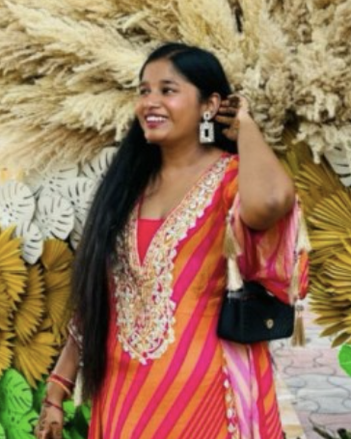

We’re delighted to have our special guests join us today.
Click a guest to meet them
Special Guest
Maxim Lobo
Head of College & Career Counselling
Greenwood High International, Bengaluru
IB · AP & TOK Coordinator
An education professional with over 14 years in international education, college
counselling and student guidance. Alongside leading college and career counselling at
Greenwood High, Maxim coordinates AP and Theory of Knowledge, and serves as an IB examiner
for Theory of Knowledge and Spanish Ab initio — bringing deep expertise in university
guidance, international curricula and global education pathways.
Special Guest
Susmita Bharadwaj
University & Career Counsellor
Oakridge International School, Bangalore
Susmita guides students on university and career pathways at Oakridge, with a particular
strength in UK admissions. She previously served as Assistant Manager (Admissions) at
Northumbria University (2011–2013) and as a Career Counselor at Kshepani Career
Solutions, with earlier roles at Unisys, Dell and GE Capital International Services.
Special Guest
Nidhi Sehgal
Career Counselling & University Guidance
Sreenidhi International School, Hyderabad
An accomplished career counselling and education professional with extensive experience in
international education, university guidance and student development. Specialises in
university admissions counselling, career guidance, the IB curriculum and academic
leadership. Has held leadership roles at reputed international schools and is an IB examiner
for Theory of Knowledge and Spanish Ab initio — bringing strong expertise in global
education pathways and holistic student development.
Saige Founders Internship
✨ Experience insights — in the students’ own words.
Saige Founders Internship
Meet our student founders
Ehan KH
Grade 12 · GIIS Abu Dhabi
Currently in Grade 12 at GIIS Abu Dhabi, Ehan is looking to pursue Computer Science,
with a focus on AI and Data Science.
Kurayami Tokio
Freshman · Ca’ Foscari University of Venice
Studying Computer Science – Data Science at Ca’ Foscari University of Venice,
with plans for a career in AI. Outside class, a licensed badminton player who loves to draw.
Click a card to spotlight it
Internal Team Feedback
New product updates — as seen by the teams who use them every day.
Internal Team · New Product Updates
What changed on the ground
Praful Kumar
Associate Team Lead · Flow AI
Praful will talk about the move from the old CRM to the new MI CRM, and how it sped up
processing, streamlined workflows, and gave the team better tracking and visibility of
workloads.

Debika Bose
Operations Specialist · Student Placements
Debika will give a quick overview of how the UCAS ops workflow has improved, comparing
the previous data with the current data.
Click a card to spotlight it
From Stage to Outcome
“Before what’s next — here’s what already worked.”
Punit Aswal
Cialfo Desktop App: Adoption
Downloads▲ 35%
6.3K
Users who downloaded since GA on 30 July, to 2 Nov.
Up from 4.7K last month.
Sessions▲ 2×
34.8K
Total sessions since launch.
2× the 17.4K of last month.
Day-14 Retention▲ 6.5 pts
52.6%
Still active two weeks after first use.
Up from 46.1% last month.
Mac & Windows▲ 32%
1,663 / 1,125
Active users on Mac against Windows.
Up from 1,300 / 817 last month.
Vidhu Raj Singh
cDocs: What moved
CX Tickets (Quarter)▼ 33%
110→74
cDocs CC Jira tickets, Q3 ’24 vs Q3 ’26.
32.7% down — on the way to the 70% reduction target.
CX Tickets (October)▲ 12%
58→65
cDocs CC Jira tickets, Oct 2025 vs Oct 2026.
Peak application season — up 12% on a busier year.
Documents Sent▲ 13%
26.5K→30.0K
Documents sent through cDocs, Oct 2025 vs Oct 2026.
+13% year on year.
Counsellors Sending▲ 0.5%
948→953
People sending documents in October, 2025 vs 2026.
Each sent ~31 documents this October, up from ~28.